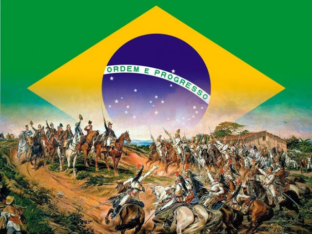

A imagem clássica do "Grito do Ipiranga" retrata Dom Pedro I heroicamente montado em um cavalo às margens do riacho. Contudo, a independência foi um processo histórico complexo moldado por negociações políticas, pressões das elites agrárias e conflitos regionais.
A separação de Portugal garantiu que o Brasil não fosse recolonizado após a Revolução Liberal do Porto (1820). No entanto, as camadas populares continuaram excluídas da cidadania através do voto censitário, provando que a ruptura beneficiou primordialmente os grandes proprietários de terras.
Questão 1
A Proclamação da Independência brasileira caracterizou-se principal e essencialmente por:
A) Promover uma profunda reforma agrária com a divisão de terras para camponeses.
B) Romper totalmente com o modelo econômico agroexportador.
C) Garantir a soberania sob a forma de governo republicana e democrática.
D) Consolidar a emancipação política frente a Portugal preservando a monarquia e a estrutura socioeconômica vigente.
Questão 2
A análise crítica de pinturas históricas, como a obra de Pedro Américo (1888), revela que o quadro buscou construir uma imagem da independência baseada em:
A) Uma mobilização popular espontânea liderada por camponeses armados.
B) Um ato heroico, elitizado e grandioso, associando a fundação da nação à figura providencial do monarca.
C) Uma aliança militar internacional com repúblicas vizinhas.
D) Um processo pacífico negociado por assembleias populares.